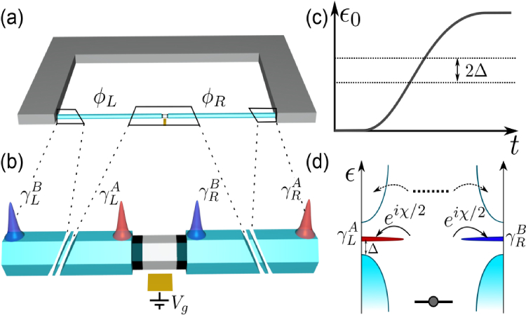
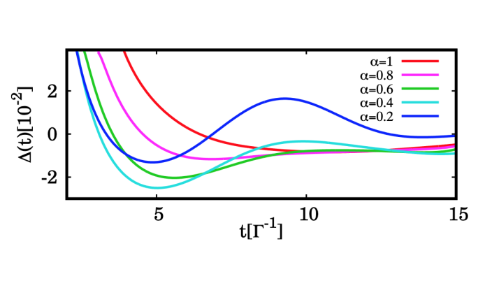
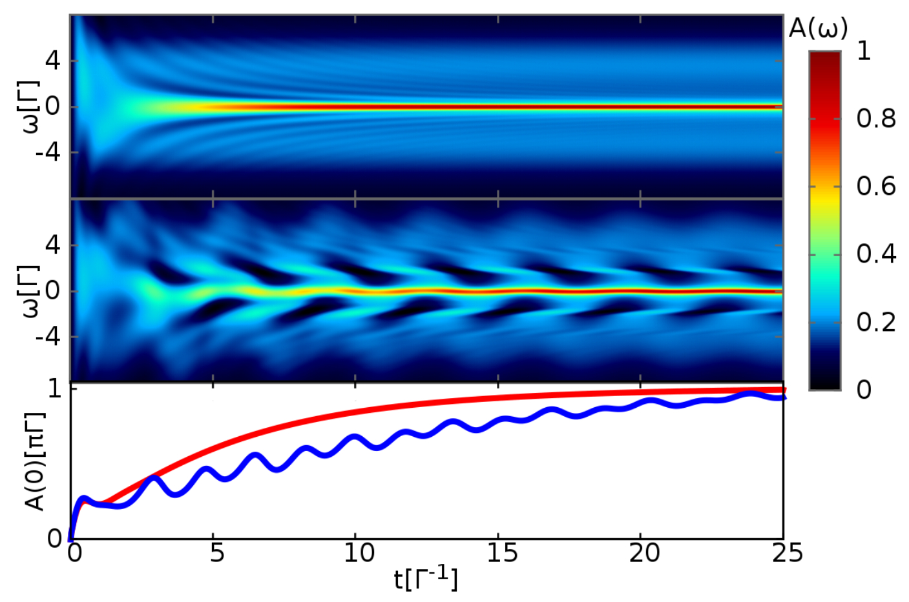
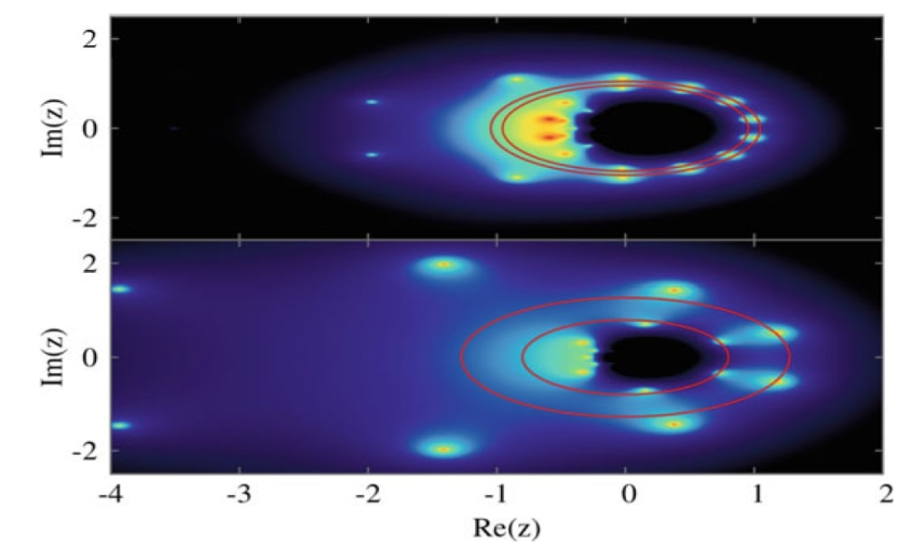
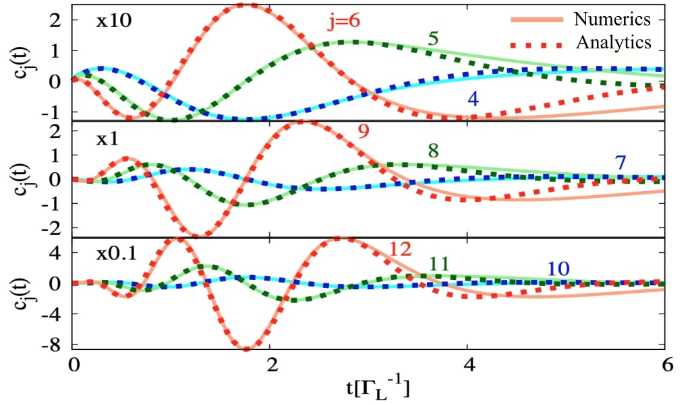
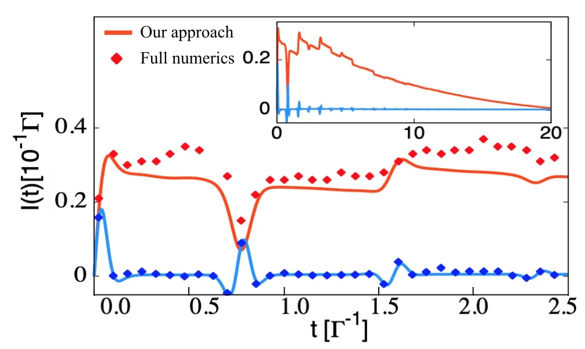

The demonstration of the non-abelian statistics of Majorana bound states is a milestone in the field of topological superconductivity. In this work, published in Physical Review B (Rapid communication), we show that charge-tranfer based operations between a quantum dot and two topological superconductors can be performed in the ns to μs regime with a fidelity close to unity. These results establish charge-transfer based operations as a realistic alternative to experimentally probe the non-abelian nature of MBSs. [Full article]
18 Feb 2020
Demonstrating Majorana non-abelian statistics using charge-transfer based operations

5 Mar 2019
How long does it take for electron correlations to develop in molecular junctions?

Electron correlations play a central role in the nanoelectronics field. While they have been extensively investigated in the stationary regime, the time build-up of electron correlations has remained rather unexplored. In this new article in published in Physical Review B (Rapid communication), we analyze the time build-up of electron correlations in a molecular junction, characterized by a change on the charge transfer statistics. [Full article]
28 Aug 2018
Transient dynamics in interacting nanojunctions

The effect of many-body interactions is a central question in condensed matter physics. In this article we analyze the onset of electron-electron and electron-hole interactions in the time domain using perturbation theory introducing a novel numerical self-consistent treatment.[Full article]
31 Oct 2017
Counting statistics

Yang-Lee zeros have been used to characterize the phase transition phenomena in a number of problems. In this article we perform a full counting statistics analysis of the charge transfer through a quantum dot coupled to superconducting leads. We show that the zeros of the generating function can be used to identify the coexistence between different phases. [Full article]
21 Dec 2016
Counting statistics characterizing quasiparticle trapping in superconducting junctions
.jpg)
Electron counting statistics characterizes fully the electron transport through the junction. In this article we show that it can be used to determine the formation time of the Andreev bound states. Additionally, it gives a measurement on the probability of trapping quasiparticles in superconducting nanojunctions. [Full article]
5 Dec 2016
Universal transient oscillation in nanojunctions

The short time dynamics of the charge and current cumulants is dominated by some oscillations with with an amplitude independent from any parameter, i.e. universal. In this article we show that these oscillations are due to the first electron crossing the junction, providing analytic expressions. We show that a finite probability of transfering an electron in both directions of the junction leads to a deviation from the universal behavior. [Full article]
25 Sep 2015
Transient dynamics in molecular junctions

The existence of several stationary solutions (bistability) in molecular junctions has been highly debated. In this article we show, using the dressed tunneling approximation, that the electron-phonon interaction leads to a slowing down of the relaxation of the molecular junction, causing an aparent bistability at short times. We analyze the signatures of this aparent bistability in the current, comparing with numerically exact methods. We additionally analyze the time evolution of the current cumulants and the short time statistics of the transfer charges.[Full article]
14 Feb 2014
Dressed tunneling approximation for molecular junctions
.jpg)
Many-body interactions play a central role in condensed matter physics. In this context, understanding the role of electron-phonon interaction is important for the field of molecular electronics. In this publication we derive a new approach, the dressed tunneling approximation, which recovers the known limits in the polaronic regime (strong electron-phonon interaction). We analyze the spectral density, current and noise properties, showing a remarkable agreement with numerically exact methods. [Full article]